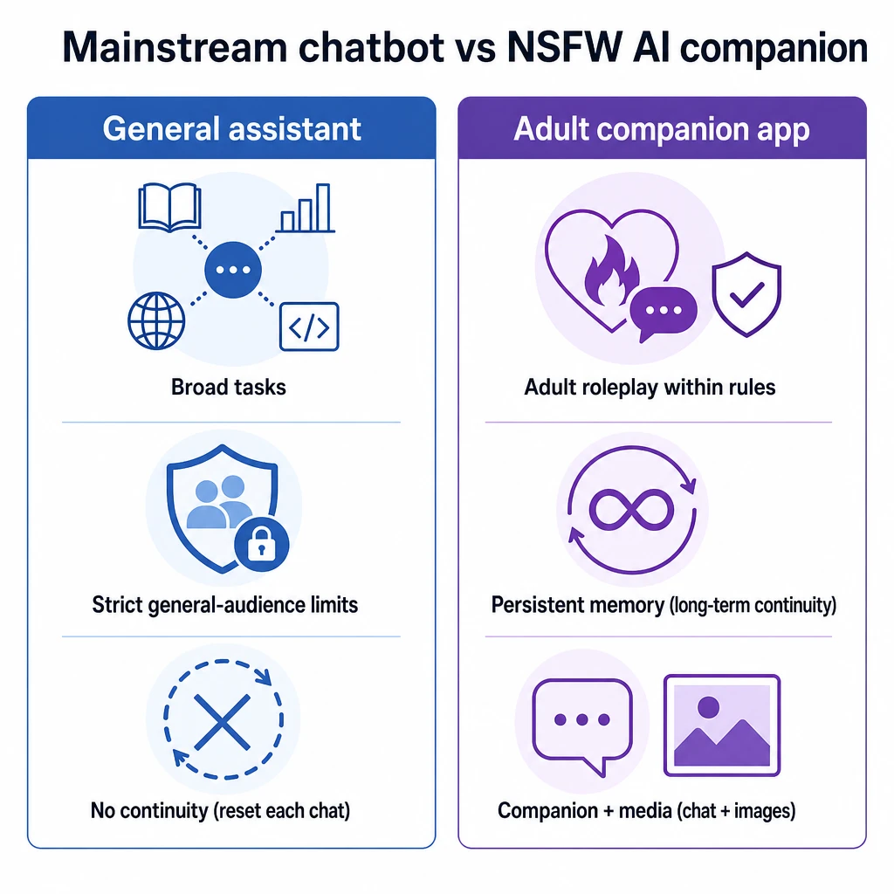
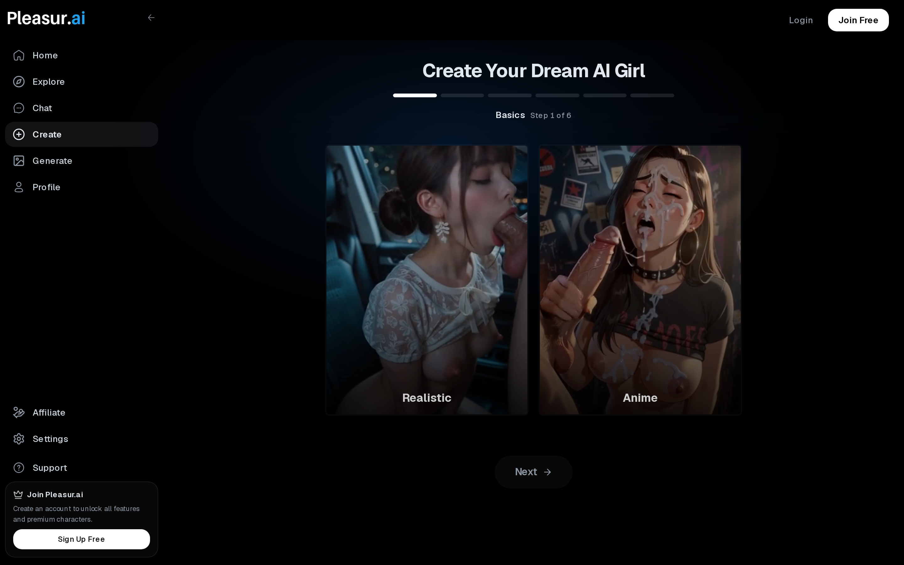
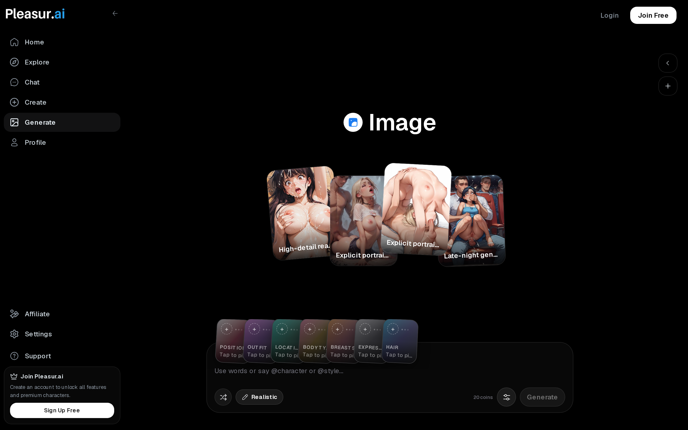
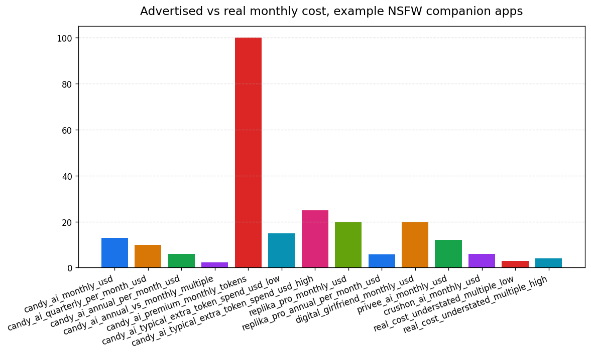
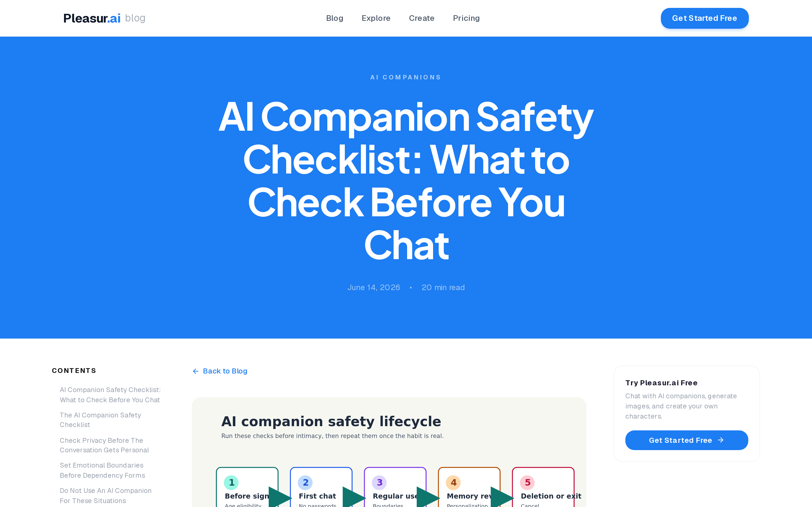

How to Choose an NSFW AI Companion
The worst way to pick an NSFW AI companion is to open a "best apps" list and believe the first price, privacy promise, or "uncensored" claim you read. Most of those numbers are bait. Most of those rankings are ordered by who pays the affiliate commission, not by what holds up when you use the thing.
There is no single best NSFW AI companion. The right call is whichever platform survives a set of criteria you control and can verify yourself.
So this guide hands you that test. You get a scorecard built around eight criteria, and a five-minute check for each one, so you can grade any platform — including the ones that launch after this page does. By the end you'll know what a fair price means once you strip out the marketing, what an honest privacy policy really commits to, and why a real age gate is a sign you're in good hands.
No listicle gives you that. A ranking tells you what to buy. This tells you how to decide.
What an NSFW AI companion is — and which apps actually allow it
An NSFW AI companion is a mature character-chat product built for sustained roleplay and continuity — not a mainstream assistant with the safety filter turned down. That distinction is the whole reason "does Character.AI allow NSFW?" and "is Claude NSFW friendly?" keep getting searched, and keep coming back with a no.
Mainstream tools refuse explicit content by design. Character.AI, Claude, and Replika's free tier will throttle or shut down a sexual roleplay mid-sentence, because they're built for a general audience and a filter is doing its job. You can fight that filter forever and lose. The category that serves grown-ups is a different class of product, built without the mainstream guardrails from the start.
The job these apps do is specific: adult roleplay, a persona that stays consistent across a conversation, fantasy within boundaries you set, and often image generation or voice layered on top. People leave a filtered bot for an uncensored one because the range is the point — the freedom to follow a scene without hitting a wall. "Uncensored," though, should mean mature content within stated limits — anything-goes is a different thing, and illegal is off the table entirely. A platform that can't tell you where its line is hasn't removed the line. It's just hidden it.
Once you know what the category is for, comparing apps stops being a ranking problem and becomes a scoring one.

The 8-criteria scorecard (use it before you compare apps)
Eight criteria decide whether an NSFW AI companion is worth your money: chat realism and memory, customization depth, media, adult-content range, price, privacy, age verification, and platform fit. The table below tells you what a strong score means on each, the red flag that should stop you, and how to test it in about five minutes.
Use the scorecard before you read a single ranking. A criteria-axis table beats a stale listicle for one reason: it survives. When affiliate links go dead and the "top pick" gets acquired or enshittified, that ranking is worthless. Your eight criteria still work — on every app on the page, and on apps that don't exist yet.
Each row gets its own section below, in table order, so you can go as deep as you want on the criteria that matter most to you. The five-minute checks are meant to be actually run — most of them you can do inside a free trial before you ever enter a card number.
| Criterion | What "good" looks like | Red flag | How to test it in 5 minutes |
|---|---|---|---|
| Chat realism + memory | Replies stay in character and recall stated details across the conversation | Generic replies, reset behavior, or memory that only works inside one message | Say "call me Alex"; talk about something else for five messages; then ask "what's my name?" — a real one answers "Alex" unprompted |
| Customization depth | Personality, appearance, backstory, and scenario controls are spelled out and detailed | Only surface avatars or vague "persona" sliders | Build the same companion twice, once "shy" and once "dominant," send each the identical opener — the two replies should read like different characters |
| Images, voice, and media | Media features match the chat use case and state their limits | Pretty screenshots with unclear quotas, token costs, or safety rules | Open the pricing/help page and read the per-image token cost and monthly quota out loud — if you can't state both numbers in 30 seconds, they're hidden on purpose |
| Adult-content range | Mature roleplay allowed within clear consent and safety boundaries | "Anything goes," bypass framing, or no prohibited-content language anywhere | Open the content policy and look for a named prohibited list (minors, real people); then run one ordinary adult scene and confirm it neither refuses nor over-delivers |
| Pricing transparency | Monthly price, annual discount, token quotas, and add-ons are easy to find | Hero price hides annual-only billing, metered media, or renewal terms | Toggle the pricing page from annual to monthly and watch the number jump; then locate the line stating tokens/images included per month |
| Privacy + data controls | Retention, deletion, training use, and payment discretion are spelled out | "Private" claim with no retention or deletion detail | Ctrl-F the privacy policy for "retention," "training," "deletion," "opt-out" — each should return a concrete answer, not zero hits |
| Age verification + clear ToS | Adult access is gated and the rules are easy to inspect | "No ID" or "no signup" sold as the feature | Try to reach the adult tier and confirm a real wall stops you (verification step, not a dismissible checkbox); open the footer ToS and find the prohibited-content section |
| Platform fit | The app matches where and how you want to use it | Mobile/web mismatch, weak exports, missing account controls | Open it on the device you'd actually use, then find the cancel button before subscribing — if you can't locate it in two minutes, leaving will be worse |
Here's the map. Now walk the criteria in the order you can test them.
Criterion 1 — Chat realism and memory
If a companion can't stay in character and remember a simple detail across one session, nothing else on this list will save it. This is the criterion every other criterion sits on top of.
Memory means continuity. It recalls what you told it earlier and carries that forward, instead of treating each message as a blank slate. A "smart AI" badge on the pricing page is not the same thing — the real question is whether the detail you mentioned three messages ago still exists three messages later. Chat realism is the companion half of that: rhythm, consistency, a persona that doesn't snap back to a generic helpful-assistant voice the moment the scene gets specific.
You can break both in five minutes. Tell it one concrete preference early — a name you like to be called, a detail about the scenario, a boundary. Change the subject completely for a few exchanges. Then ask a follow-up that depends on that earlier detail. A companion with real continuity weaves it back in without being reminded. A weak one asks you to repeat yourself, or worse, contradicts what you just said. When the illusion breaks like that, it tends not to come back, and you'll feel it inside the opening session.
![Split-panel illustration showing memory in AI companion chat. Left panel labeled "Real memory — AI remembers": a chat conversation where the user said "I told you my name is Alex last week" and the AI reply seamlessly uses "Alex" naturally in context, with a small memory-bank icon highlighted. Right panel labeled "No memory — AI forgets": the same user message but the AI replies generically without using the name, with a broken-link or empty memory icon. Abstract/illustrative style, not a real chat screenshot — use stylized speech bubble shapes and clean iconography. White background, sans-serif labels, editorial illustration style, brand-neutral colors, no real people.](../images/how-to-choose-an-nsfw-ai-companion/image-1-split-panel-illustration-showi.png)
And a companion that holds its persona is still only as good as how much of it you got to design in the first place.
Criterion 2 — Customization depth
Deep customization is the difference between a companion that's yours and a stock personality wearing a new face. The depth you get at setup decides how distinct the opening conversation feels, and how coherent the persona stays over the next hundred.
"Deep" means explicit controls for appearance, backstory, personality, preferences and kinks, and conversation style — plus voice selection where a platform offers it (voice support varies widely across the category). Surface avatars and a vague "persona" slider are not customization. They're a paint job.
The test: build a trial companion and count how many controls actually change the opening chat. If picking "sarcastic" versus "sweet" produces the same flat replies, the depth was cosmetic. Pleasur.AI's AI Companion Creator is a fair illustration of the explicit version — you set appearance, then a backstory field, then personality traits, kinks, and a conversation style, and each of those visibly steers how the companion talks back. Candy AI takes a similar approach but leans on preset personality archetypes, which gets you to first conversation faster if you'd rather pick than build. That's the bar to hold any platform to: controls that change how the companion talks, down to its sense of humor and the way it handles a kink you set — cosmetic sliders move the picture and nothing else. For the full build flow, our honest 2026 guide to making an AI girlfriend walks it step by step.

Criterion 3 — Images, voice, and media
Media features only matter when they support the companion you're building. A grid of gorgeous sample images on a landing page tells you nothing about whether you can generate one of your own companion, in your scene, without burning your whole quota.
Image generation is now a baseline expectation; voice and video are increasingly common, but vary heavily by product, so treat them as something to verify rather than assume. The questions that matter are unglamorous: what are the quotas, what are the output limits, what content is allowed, and does the media live inside the chat or in a separate tool you have to juggle. In-workflow generation beats app-hopping every time.
Pleasur.AI's AI Image Generation is a useful example of the in-workflow version — style presets and prompt controls, and the ability to generate an image of your companion from inside the chat thread rather than exporting to a different surface. Crushon.AI also offers in-chat image generation, though reviewers consistently rate the output quality lower than dedicated image-gen platforms. That's the criterion working: media that extends the companion you already built, instead of a disconnected gallery you have to maintain alongside it.
Capable media still tells you nothing about how far the content itself is allowed to go, which is a separate question worth its own test.

Criterion 4 — Adult-content range within real limits
The right NSFW platform is clear about what adult content it does support and equally clear about what it won't. "Anything goes" is a red flag, not a feature.
There's a real difference between fewer mainstream refusals and no limits at all. A product that advertises zero boundaries is usually hiding one of two things: a thin model that can't handle nuance, or a moderation problem it would rather you didn't think about. The platforms worth your money say what's off the table — illegal content, real-person likenesses, anything involving minors — and then deliver freely inside that frame.
This is also where the "how do I bypass the filter" search energy needs redirecting. Don't hunt for a jailbreak. Pick a product built for grown-ups and read its boundaries, because a tool designed for the use case will always beat a mainstream one you've tricked into misbehaving for ten minutes before it resets.
Consent and emotional realism are their own axis in 2026, and worth weighing deliberately. The better companions now compete on how an exchange feels — they read your cues, hold a boundary you set, and recover gracefully when a scene crosses one, which is itself a quality signal. The honest ones lean into that immersion without blurring entertainment into dependency, and they won't promise you a real relationship. A companion that respects a "no" mid-scene and one that markets itself as your literal partner are not the same product; read that restraint as a maturity signal worth paying for.
The test is simple. Read the content policy, then run one normal adult scenario and watch whether the behavior matches what's stated. Mismatch in either direction — refusing what it allows, or allowing what it bans — tells you the policy is decoration.
![Horizontal content-range spectrum infographic. A single gradient bar spans the full width from left to right. Left end labeled "SFW" with a shield icon — tame, suggestive-only content zone, shown in a calm blue. Middle section labeled "NSFW-lite" — mature themes, partial nudity, light adult content, shown in amber/orange. Right end labeled "Fully explicit" — unrestricted adult content within legal limits, shown in a deep red. Each zone has 2-3 example descriptors as small text below the bar. Above the bar, a vertical line with an arrow points to the right edge with text "Clear prohibited line here — no minors, no real people." Clean infographic style, white background, sans-serif labels, editorial illustration.](../images/how-to-choose-an-nsfw-ai-companion/image-2-horizontal-content-range-spect.png)
And once you trust what an app will let you do, the next thing it tends to be vague about is what doing it actually costs. That's where most of the deception lives.
Criterion 5 — Pricing: the hero price is a bait number
The advertised price is the least useful number on the page. Real monthly cost runs three to four times the headline once annual-only billing and metered media tokens are added back in — for a moderate media user, the honest Candy AI cost breakdown lands the real total at $21–31/month against a $5.99 sticker.
Take Candy AI, which most of the category copies. The "$5.99/mo" you see is the annual rate, billed twelve months upfront. Month-to-month is actually $12.99 — a 2.2× markup for paying as you go — with quarterly landing at $9.99 (OhGirlfriend pricing breakdown, 2026). That's before media. Every paid tier ships only about 100 tokens a month, and images burn 2–5 each while voice runs roughly 1 per minute, so anyone using the media features they paid for gets pushed into add-on packs fast. Reviewers tell moderate media users to budget $15–25 a month extra in tokens. Stack the $5.99 base on the annual plan with that $15–25 in tokens and the page that advertised $5.99 is describing a $21–31/month habit — three to four times the headline, exactly as promised, and that's before you go month-to-month.
The prices conflict across the category too, which is the real lesson — don't trust one number, map the tiers. Replika gates adult chat behind Pro at $19.99/mo (AI Companion Guides, 2026). Digital Girlfriend AI is a flat $19.99/mo (Scribe review, 2026). Privee AI's standard tier starts at $12/mo (Scribe review, 2026), while CrushOn.AI's entry tier runs under $4/mo before its higher voice tiers. Pleasur.AI's Starter tier is $12.99/mo month-to-month or $5.20/mo on annual billing; the Standard tier (which adds image-generation coins and voice call minutes) runs $27.99/mo or $11.20/mo annual, with a 7-day money-back guarantee across all plans. Same promise, sticker prices spanning four times or more, and the cheapest sticker rarely stays cheapest once you use it.
So the test runs in three steps: find the monthly price, not the annual hero number. Then find the metered-token line. Then read the renewal terms. If any of the three is hard to locate, that's not an accident — it's the pricing strategy working as designed.
A platform that hides its real price is usually just as vague about your data. Privacy gets the same scrutiny.

Criterion 6 — Privacy and data controls
For an intimate companion, privacy controls aren't fine print — retention, deletion, training use, and payment discretion are core product features. Most apps document them badly or not at all, and the few that spell things out often reveal defaults that cut against you.
Run a short checklist on any policy: how long are chats retained, can you delete them for good, do your conversations train the model by default, is there an opt-out and where is it buried, is the billing discreet, and can you reach a human if something goes wrong. The most sensitive thing you'll ever type into an app deserves all six answers.
The documented defaults are worse than the marketing suggests. Digital Girlfriend AI retains chat logs for "training/improvement" unless you opt out via account settings, and keeps a 7-day undelete window on account deletion (Scribe review, 2026). Treat that as the industry pattern rather than one bad apple: free and standard tiers training on conversations by default with a buried opt-out, and even with history turned off, abuse-monitoring retention runs roughly 30 days before deletion — the policy OpenAI spells out for disabled history and that companion apps broadly mirror. The most intimate data a user generates is often the hardest to keep out of a training set.
Meanwhile "safe" and "anonymous" get asserted on every landing page and proven on none. No breach history, no audit, no retention number — the silence is itself the red flag.
The test: open the privacy policy and use your browser's find function (Ctrl-F or Cmd-F) to search for "retention," "training," "deletion," and "opt-out." A trustworthy policy returns a hit and a concrete answer for all four; if the words aren't there at all, you already have your answer. For the full vetting process, our AI Companion Safety Checklist goes deeper than this one criterion can.
Where privacy protects your data, age verification protects the platform's legitimacy — and counterintuitively, the harder it is to get past, the better the sign.

Criterion 7 — Age verification and clear ToS (a green flag)
A real age gate and inspectable terms of use are signs of a legitimate operator. The apps selling "no ID, no sign-up" as a perk are waving the actual red flag.
The listicles have this backwards. They frame age checks as friction to celebrate routing around, and rank "no sign-up" platforms higher for it. Flip that. A platform that keeps minors out and publishes terms you can read is doing exactly what a trustworthy operator should. The one that brags about asking you for nothing is telling you it answers to nobody.
Learn to tell a real gate from theater. A real one is a hard wall: an explicit 18+ confirmation on entry, then an actual verification step (card check, ID provider, or age-estimation prompt) before the adult tier unlocks — Replika puts 18+ verification in front of erotic chat rather than just an "I am over 18" tickbox (AI Companion Guides, 2026). A fake gate is one dismissible checkbox with nothing behind it. That's why a real gate reads as a green flag once you flip the logic: an operator willing to lose the impulse signup is one building to survive scrutiny from payment processors, app stores, and regulators — exactly who you want holding your most intimate chats. The fake gate signals the opposite — fastest possible card entry, no one to answer to when something goes wrong.
The terms of service work the same way. Good ToS are findable from the footer, dated, and plain-language: what's prohibited, how disputes work, how you cancel. Terms that are missing, buried, or boilerplate that never mentions adult use mean the rules are improvised — and can change on you without notice.
Hold our own platform to the same bar: Pleasur.AI is an 18+ product that gates the adult tier behind an explicit 18+ confirmation on signup, and the subscription step itself — which requires a card before any adult content unlocks — adds a second hard wall that an anonymous checkbox does not. That's the two-step pattern this criterion rewards, stated plainly rather than promised; run the same check on it that you'd run on anyone else. The test follows directly: confirm a real gate stops you on entry, skim the terms for a prohibited-content section and a cancellation clause, and if "no verification" is anywhere in the pitch, close the tab.
![Side-by-side diagram comparing age verification approaches. Left panel labeled "Real age gate (green flag)": shows a hard-wall UI step with an ID-card icon or credit-card verification icon, a bold "18+ Verification Required" heading, and sub-labels "Hard wall", "ID or card step", "Blocks entry until verified". Right panel labeled "Checkbox theater (red flag)": shows a simple checkbox with text "I confirm I am 18+" and nothing else, sub-labels "No hard wall", "One dismissible click", "Nothing verified". Each panel has a color-coded border — green on left, red on right. Clean diagram style, white background, sans-serif labels, no real people, editorial illustration.](../images/how-to-choose-an-nsfw-ai-companion/image-3-side-by-side-diagram-comparing.png)
With safety and legitimacy settled, the last test is fit — does the app match how you'll actually use it?
Criterion 8 — Platform fit
The best-scoring platform still fails if it doesn't fit your device, your comfort with signing up, your cancellation expectations, or your actual use case. Fit is the criterion that turns a good app in the abstract into the right app for you.
Start from your situation and match the platform to it. Use a phone in private? A polished mobile app matters. Share a device, or want zero install footprint? A web-only login you open and close in a browser tab is safer — and many companion apps are web-first, so don't assume an App Store listing exists. If discretion is the priority, weigh the account path: email-and-password leaves a lighter trail than a phone number or a linked app-store identity, and a vague billing descriptor beats a card statement that reads like an adult brand. Then weigh your use case — chat-first, companion-builder, or image-heavy — because the best pick for one is rarely the best for another. And test the exit before you commit: find the cancellation, export, and delete path up front, because an app that makes leaving hard is telling you how it sees you.
To show the lens at work, here's the same scorecard run lightly across a few platforms readers shop by name. Not a ranking — the method applied, and you should re-run it yourself before trusting any cell:
| Platform | Customization depth | Real monthly cost | Age gate |
|---|---|---|---|
| Candy AI | Deep persona + image controls | Advertised $5.99 (annual); ~$21–31 real once metered tokens are added, more month-to-month (Scribe cost breakdown, 2026) | Entry 18+ confirmation |
| Replika | Strong personality, lighter adult-roleplay controls | Pro $19.99/mo for adult chat (AI Companion Guides, 2026) | 18+ verification before adult tier — a green flag |
| Privee AI | Roleplay- and image-forward personas | Standard tier from $12/mo (Scribe review, 2026) | 18+ confirmation on entry |
Read it as a worked example, not a verdict — the cost column alone shows why a sticker price is the wrong thing to compare on. Once you've graded a couple of apps this way, a listicle becomes useful again as a starting shortlist rather than a verdict. Our best AI girlfriend apps guide and Dirty AI in 2026 cover the full field, and the no-filter category breakdown maps the uncensored end specifically.
![Use-case-to-platform match diagram for choosing where to use an AI companion. Two columns connected by arrows. Left column headed "Your situation": three stacked scenario cards with simple line glyphs — (1) a phone icon labeled "Phone, in private", (2) a two-people-sharing-one-screen icon labeled "Shared device", (3) a padlock/fingerprint icon labeled "Discretion first". Right column headed "Best-fit platform type": three target cards — "Polished mobile app", "Web-only browser login", "Light account + vague billing". Color-matched curved arrows connect each scenario to its best fit: phone-in-private to mobile app, shared device to web-only login, discretion-first to light account. A small green footnote chip at the bottom reads "Test the exit: find cancel + delete first". Clean editorial flat-vector infographic, white background, sans-serif labels, brand-neutral palette (slate, calm blue, green accent), no people depicted — icon glyphs only, no photoreal, no real logos, no text artifacts.](../images/how-to-choose-an-nsfw-ai-companion/image-4-use-case-to-platform-match-dia.png)
Turn the scorecard into a next action.
Conclusion
Choosing an NSFW AI companion was never about trusting a listicle. It's about whether a platform passes the eight criteria that matter for intimate, private, ongoing companion interaction — and you now hold the test for each one.
So run it. Pick two or three apps, score them against the scorecard, and read the AI Companion Safety Checklist before you share anything sensitive or enter a card number. Want to grade a create-and-chat workflow against your own scorecard? Build a companion in the AI Companion Creator and put it through the same eight criteria you'd hold anything else to.
Editor notes / Citation gaps
All 8 draft link-markers are now resolved to real sources, and no [CITATION NEEDED] flags remain. Must-cite density: every numerical/pricing/retention claim carries a real source (8/8 must-cite claims linked; ~100% against the 60% floor). Notes on the two HIGH reconciliations and one stale-figure correction:
- Pricing math reconciliation (HIGH #1) — RECONCILED (Y): The "typically" hedge is dropped; the 3–4× claim is committed flat. The vague "$30-plus habit" is replaced with the internally consistent $5.99 base + $15–25 metered tokens ⇒ $21–31/month total, sourced to the Scribe "What You Actually Pay" breakdown, 2026 (which states the moderate-media total is "$21–31/month"). $21–31 against a $5.99 sticker is ~3.5×–5.2×, so "three to four times the headline" holds at the low end and is exceeded at the high end / month-to-month. The sub-table Candy AI cost cell was updated from the old "~$13–38" to "~$21–31" so the table and body agree.
- Named-brand sub-table (HIGH #2) — SOURCED (row swapped, not cut blank): The Nomi/Nastia "verify it yourself" IOU row was cut and replaced with a sourced Privee AI row ($12/mo standard, Scribe review). All three sub-table rows now carry real citations; no "verify it yourself" placeholder remains. Kept honest — no guarantees, no real-person likeness.
- CrushOn.AI figure correction: The draft's "$5.99/mo" for CrushOn was stale — 2026 sources put the entry tier under $4/mo with higher voice tiers, and figures diverge across reviews ($3.90 / $4.99 / $9.99). Rather than commit a shaky number, the body now states CrushOn entry runs "under $4/mo" (cited to StartupHub's 2026 roundup) and frames the divergence as evidence for the "don't trust one sticker" thesis.
Voice-flagged statements (review) — NEVER auto-linked
Opinionated voice / population claims, not citation-needing facts. Listed for editor judgment only:
- "Most of those numbers are bait. Most of those rankings are ordered by who pays the affiliate commission" (intro) — population/motive claim.
- "There is no single best NSFW AI companion" (intro) — editorial absolute.
- "Character.AI, Claude, and Replika's free tier will throttle or shut down a sexual roleplay mid-sentence" (Crit category intro) — behavioral generalization, true to category, not a single-source stat.
- "Image generation is now a baseline expectation" (Crit 3) — market-state assertion.
- "most of the category copies" (Crit 5, re: Candy AI) — comparative claim.
- "That's the industry pattern, not an outlier" (Crit 6) — population claim; supported in spirit by the OpenAI retention link but framed as a generalization.
- "The listicles have this backwards" (Crit 7) — editorial framing.
- "many companion apps are web-first" (Crit 8) — population claim.
Internal links wired (from 2-reference)
All internal-linking opportunities from 2-reference/ are wired with descriptive anchors: AI Chatbot No Filter (intro + Crit 8), AI Companion Creator (Crit 2 + conclusion), AI Image Generation (Crit 3), How to Make an AI Girlfriend (Crit 2), AI Companion Safety Checklist (Crit 6 + conclusion), Best AI Girlfriend Apps (Crit 8), Dirty AI in 2026 (Crit 8). 9 internal-link instances across 7 distinct brand articles.